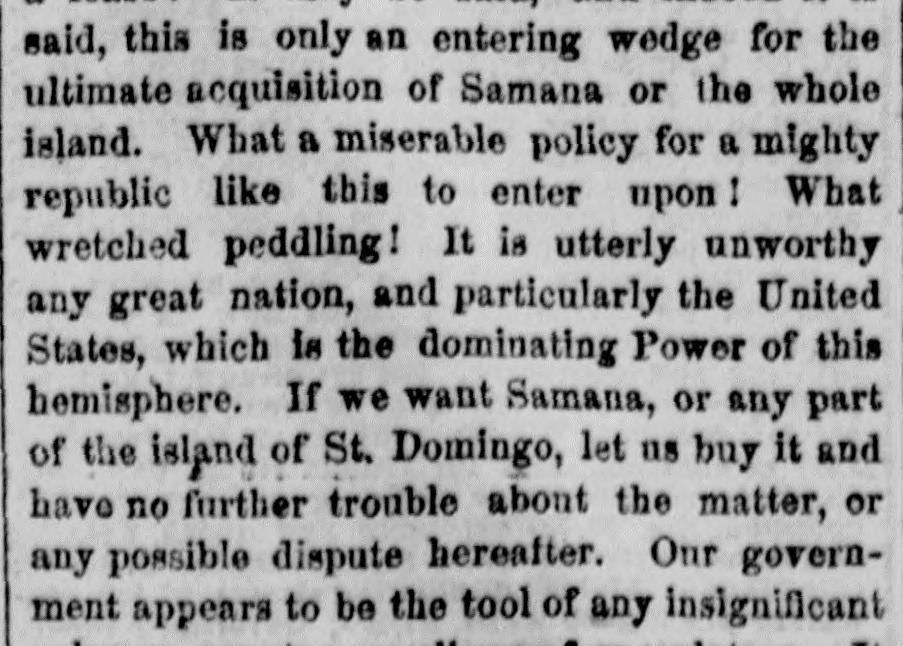
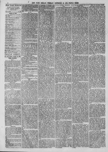

If we want Samana, or any part of the island of St. DomingoSi queremos a Samaná, o cualquier parte de la isla de Santo Domingo
The New York Herald. New York [N.Y.], December 21, 1869. Page 6. View the originalVer el original


See the full pageVer la página completaThe New York Herald argued that if the United States desires Samaná or any part of St. Domingo, it should simply purchase the territory to avoid future disputes, while criticizing the current government's policy as timid and narrow-minded. The newspaper also questioned whether the administration's sudden emphasis on the importance of the Bay of Samaná was a subterfuge designed to cover up its weak policy regarding Cuba.The New York Herald sostuvo que, si los Estados Unidos ambicionan la bahía de Samaná o cualquier otra comarca de Santo Domingo, debieran comprar llanamente el territorio para prevenir futuros litigios, fustigando la conducta del actual gabinete estadounidense como pusilánime y estrecha de miras. El diario cuestionó además si el súbito interés de la administración por la bahía de Samaná constituía un subterfugio para encubrir su endeble ejecutoria frente a la cuestión cubana.
FULL TEXT:TEXTO COMPLETO:
Policy of the Administration in the West Indies.Política de la Administración en las Indias Occidentales.
We published yesterday a glowing account of the reported lease of the Bay of Samana, island of St. Domingo, by the United States government, which was communicated to us, and also a letter from Washington of the same tenor, announcing the arrival at New York of General Babcock and the Dominican Commission on board the United States steamer Albany, for the purpose of negotiating a fifty years' lease with our government for the Bay of Samana. There is some discrepancy between the two statements. One has it that the bargain has been completed, and that the United States flag now floats over that portion of the Dominican territory; while the other says the Commission has arrived for the purpose of negotiating a lease. Then, again, it is stated the territory embraces an area of two thousand five hundred square miles; when it appears from a reliable communication from our correspondent at Samana that it is only estimated at two hundred and twenty-five to two hundred and forty square miles—that is, the length is about thirty miles and the breadth eight miles, including the islands along the coast.Publicamos ayer una brillante relación del reportado arrendamiento de la Bahía de Samaná, isla de Santo Domingo, por el gobierno de los Estados Unidos, que nos fue comunicada, y también una carta de Washington del mismo tenor, anunciando la llegada a Nueva York del general Babcock y la Comisión Dominicana a bordo del vapor de los Estados Unidos Albany, con el propósito de negociar con nuestro gobierno un arrendamiento de cincuenta años para la Bahía de Samaná. Hay alguna discrepancia entre las dos afirmaciones. Una sostiene que el trato ha sido completado, y que la bandera de los Estados Unidos ahora ondea sobre esa porción del territorio dominicano; mientras que la otra dice que la Comisión ha llegado con el propósito de negociar un arrendamiento. Luego, además, se afirma que el territorio abarca un área de dos mil quinientas millas cuadradas; cuando resulta de una comunicación fidedigna de nuestro corresponsal en Samaná que solo se estima en doscientas veinticinco a doscientas cuarenta millas cuadradas—es decir, la longitud es de unas treinta millas y la anchura de ocho millas, incluyendo las islas a lo largo de la costa.
It is particularly worthy of notice, too, that in the same paper in which these statements appear, that is, in our issue of yesterday, was published the news of St. Domingo having negotiated a loan with British capitalists, for seven hundred and fifty-seven thousand pounds sterling, on the condition that St. Domingo hypothecates the entire proceeds of receipts from imports and exports at the ports of St. Domingo and Puerto Plata, as well as the royalties from the working and export of guano from the island of Alta Vela, and in addition to the revenues arising from coal and other minerals, and mahogany and other woods, from the peninsula of Samana. If this be true the cunning Dominicans are playing a nice game with both the United States and the British, and all on this strip of territory called Samana, with its bays, harbors and islands. If they would only sell out some other, or some of the same privileges to France, Spain and other European countries, it would make as nice a muddle in the future as any one could wish to see. This Samana business has all the appearance of a big job or, may be, a number of jobs.Es particularmente digno de notar, también, que en el mismo periódico en que aparecen estas afirmaciones, es decir, en nuestra edición de ayer, se publicó la noticia de que Santo Domingo había negociado un empréstito con capitalistas británicos, por setecientas cincuenta y siete mil libras esterlinas, bajo la condición de que Santo Domingo hipoteque la totalidad de los ingresos por derechos de importación y exportación en los puertos de Santo Domingo y Puerto Plata, así como las regalías por la explotación y exportación de guano de la isla de Alta Vela, y además los ingresos provenientes del carbón y otros minerales, y de la caoba y otras maderas, de la península de Samaná. Si esto es verdad, los astutos dominicanos están jugando un bonito juego tanto con los Estados Unidos como con los británicos, y todo sobre esta franja de territorio llamada Samaná, con sus bahías, puertos e islas. Si solo vendieran algunos otros, o algunos de los mismos privilegios a Francia, España y otros países europeos, haría un enredo tan bonito en el futuro como cualquiera pudiera desear ver. Todo este asunto de Samaná tiene toda la apariencia de un gran negocio o, quizá, de varios negocios.
But why lease the Bay of Samana at all? Why give a hundred and fifty thousand dollars in gold a year for fifty or a hundred years for a lease? It may be said, and indeed it is said, this is only an entering wedge for the ultimate acquisition of Samana or the whole island. What a miserable policy for a mighty republic like this to enter upon! What wretched peddling! It is utterly unworthy any great nation, and particularly the United States, which is the dominating Power of this hemisphere. If we want Samana, or any part of the island of St. Domingo, let us buy it and have no further trouble about the matter, or any possible dispute hereafter. Our government appears to be the tool of any insignificant ruler or country or clique of speculators. It seems incapable of a comprehensive policy, of acting with foresight with regard to the future or of appreciating the commanding position this republic holds over all questions pertaining to the countries of America. Its peddling, narrow-minded and timid course is enough to make every American citizen feel ashamed of his government.Pero ¿por qué arrendar la Bahía de Samaná en absoluto? ¿Por qué dar ciento cincuenta mil dólares en oro al año por cincuenta o cien años por un arrendamiento? Puede decirse, y en efecto se dice, que esto es solo una cuña inicial para la adquisición última de Samaná o de toda la isla. ¡Qué miserable política para que una república poderosa como esta la emprenda! ¡Qué mezquino regateo! Es totalmente indigno de cualquier gran nación, y particularmente de los Estados Unidos, que es la Potencia dominante de este hemisferio. Si queremos Samaná, o cualquier parte de la isla de Santo Domingo, comprémosla y no tengamos más problemas con el asunto, ni posible disputa en el futuro. Nuestro gobierno parece ser el instrumento de cualquier gobernante o país insignificante o camarilla de especuladores. Parece incapaz de una política comprensiva, de actuar con previsión respecto al futuro o de apreciar la posición de mando que esta república ocupa sobre todas las cuestiones pertenecientes a los países de América. Su curso mezquino, de mente estrecha y tímido es suficiente para hacer que cada ciudadano estadounidense se sienta avergonzado de su gobierno.
The most curious and significant thing about this Samana business is that the administration, or rather the Secretary of State, appears very desirous of making a great fuss about it just now, and of representing that leased possession as more important than the island of Cuba. If we relied upon the glowing accounts given of the Bay of Samana and the official action so far concerning it, we might suppose it the most valuable possession in the Antilles. Indeed, it has been stated that this bay would be of more advantage to the United States than the annexation of Cuba. Is this absurd statement another dodge to cover up the weakness and miserable policy of the administration relative to Cuba? Does the government suppose it can blind the American people by any such wretched subterfuge? Yes, let us have the Bay of Samana; but let us get it in a proper way; let us buy it, and not pay tribute to a few negroes or mulattoes for permission to use it. Yes, let us have the whole island if that suits our policy and it can be made useful. We go as far as the farthest in our desire to extend the area and usefulness of our country. But let it be remembered that St. Domingo is sparsely settled by little more than a hundred thousand negroes and mulattoes, while Cuba has a million and a half inhabitants, and out of that number seven or eight hundred thousand of the white European race. Let it be remembered that the island of St. Domingo is desolated and produces little, while Cuba is one of the most, if not the most, productive country on the globe. The Bay of Samana may be a fine harbor, and may prove of value to us; but it lies on the eastern and outer verge of the whole of the West Indies, and is almost fifteen hundred miles from the nearest point of the United States. Cuba has many as fine or finer harbors, and some of them are almost within sight of the United States. The whole island stretches along and faces our border. It commands the entrance to the Gulf of Mexico; it dominates the channel of Yucatan, which connects the gulf with the Caribbean Sea, and it controls the windward passage at the east end, and consequently nearly all the navigation of the West Indian group. The idea of comparing the value of Samana with Cuba is simply ridiculous. Cuba, for its productions and trade, and from its important position, geographically considered, is worth far more to the United States than the whole of the rest of the West Indies put together. So much, then, for the speculative and glowing accounts of Samana and the supremely absurd comparison of it with the rich and highly important island of Cuba.Lo más curioso y significativo de todo este asunto de Samaná es que la administración, o más bien el Secretario de Estado, parece muy deseosa de hacer un gran alboroto con ello justo ahora, y de representar que esa posesión arrendada es más importante que la isla de Cuba. Si confiáramos en las brillantes relaciones dadas de la Bahía de Samaná y en la acción oficial hasta ahora concerniente a ella, podríamos suponerla la posesión más valiosa de las Antillas. En efecto, se ha afirmado que esta bahía sería de más ventaja para los Estados Unidos que la anexión de Cuba. ¿Es esta absurda afirmación otro ardid para encubrir la debilidad y la miserable política de la administración en relación con Cuba? ¿Supone el gobierno que puede cegar al pueblo estadounidense con tan miserable subterfugio? Sí, tengamos la Bahía de Samaná; pero obtengámosla de manera apropiada; comprémosla, y no paguemos tributo a unos pocos negros o mulatos por el permiso de usarla. Sí, tengamos toda la isla si eso conviene a nuestra política y puede hacerse útil. Llegamos tan lejos como el que más en nuestro deseo de extender el área y la utilidad de nuestro país. Pero recuérdese que Santo Domingo está escasamente poblado por poco más de cien mil negros y mulatos, mientras que Cuba tiene un millón y medio de habitantes, y de ese número setecientos u ochocientos mil de la raza blanca europea. Recuérdese que la isla de Santo Domingo está desolada y produce poco, mientras que Cuba es uno de los países más productivos, si no el más productivo, del globo. La Bahía de Samaná puede ser un buen puerto, y puede resultar de valor para nosotros; pero yace en el borde oriental y exterior de todas las Indias Occidentales, y está a casi mil quinientas millas del punto más cercano de los Estados Unidos. Cuba tiene muchos puertos tan buenos o mejores, y algunos de ellos están casi a la vista de los Estados Unidos. Toda la isla se extiende a lo largo y frente a nuestra frontera. Domina la entrada al Golfo de México; domina el canal de Yucatán, que conecta el golfo con el Mar Caribe, y controla el paso de barlovento en el extremo oriental, y en consecuencia casi toda la navegación del grupo de las Indias Occidentales. La idea de comparar el valor de Samaná con Cuba es simplemente ridícula. Cuba, por sus producciones y comercio, y por su importante posición, geográficamente considerada, vale mucho más para los Estados Unidos que todo el resto de las Indias Occidentales junto. Hasta aquí, pues, en cuanto a las especulativas y brillantes relaciones de Samaná y la supremamente absurda comparación de ella con la rica y altamente importante isla de Cuba.
In connection with this subject it will not be out of place to notice the peculiar position the administration occupies at present on the Cuban question. Looking at the refusal of the Secretary of State to give Congress the information asked for about Cuba, we are compelled to infer that negotiations are still going on or have been revived with Spain for the cession of the island. The conduct of Mr. Fish cannot be accounted for on any other ground. We hope it may be so, and that the terrible, bloody drama and work of devastation now going on in Cuba may be soon stopped. Of course our government is honest in the matter, should we be right in this supposition. But is Spain honest? Are not Prim and his associates humbugging our Minister at Madrid and our weak Secretary of State? Do they not still cling to the hope of crushing the Cubans, and that by temporizing with the United States? And then, if successful, would they not tell their faithful ally that, the trouble being over, Spanish honor and pride would forbid any further negotiation for the cession of Cuba? In short, would they not laugh at us for our folly, and should we not have to coolly pocket the insult? Mr. Fish may have confidence in his Spanish friends, but we have not. We hope Congress, therefore, will stand no nonsense or unnecessary palaver, but will bring this question to a practical issue at once, and that in favor of Cuban independence and annexation.En conexión con este tema no estará fuera de lugar notar la peculiar posición que la administración ocupa al presente en la cuestión cubana. Mirando la negativa del Secretario de Estado a dar al Congreso la información pedida acerca de Cuba, nos vemos obligados a inferir que las negociaciones aún continúan o han sido revividas con España para la cesión de la isla. La conducta del Sr. Fish no puede explicarse por ningún otro motivo. Esperamos que así sea, y que el terrible y sangriento drama y la obra de devastación que ahora ocurren en Cuba se detengan pronto. Por supuesto, nuestro gobierno es honesto en el asunto, si acaso tenemos razón en esta suposición. Pero ¿es España honesta? ¿No están Prim y sus asociados engañando a nuestro Ministro en Madrid y a nuestro débil Secretario de Estado? ¿No se aferran todavía a la esperanza de aplastar a los cubanos, y ello contemporizando con los Estados Unidos? Y entonces, si tuvieran éxito, ¿no dirían a su fiel aliado que, terminado el problema, el honor y el orgullo españoles prohibirían cualquier negociación ulterior para la cesión de Cuba? En resumen, ¿no se reirían de nosotros por nuestra locura, y no tendríamos que tragarnos fríamente el insulto? El Sr. Fish puede tener confianza en sus amigos españoles, pero nosotros no. Esperamos, por tanto, que el Congreso no tolere tonterías ni palabrería innecesaria, sino que lleve esta cuestión a un resultado práctico de una vez, y ello en favor de la independencia y la anexión de Cuba.